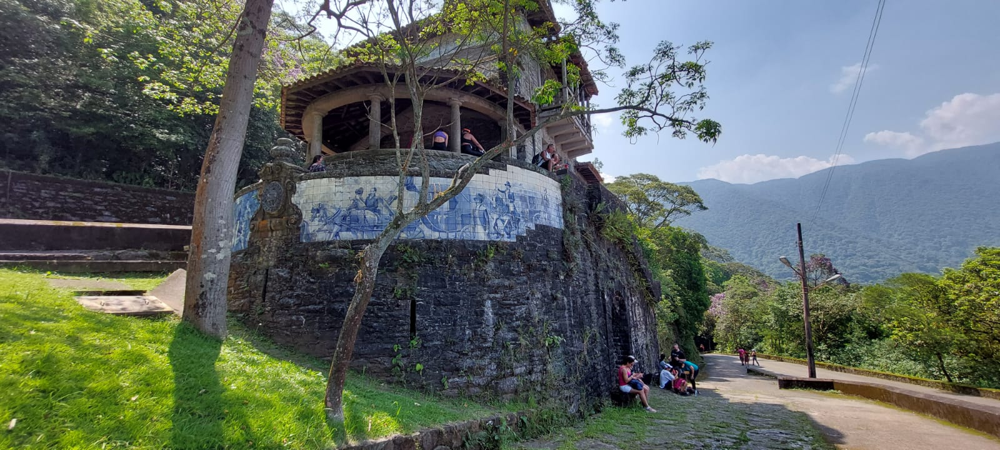

Cubatão
Embora não seja uma cidade litorânea, Cubatão oferece uma experiência única para morar ao proporcionar fácil acesso às praias vizinhas do litoral da Baixada Santista.
Após ter sido uma cidade marcada pela forte poluição industrial no passado, hoje seu crescimento econômico a partir do setor turístico tem permitido explorar a exuberante Mata Atlântica remanescente na região, preservada em áreas específicas.
Nesse ponto, vale destacar o Núcleo Itutinga-Pilões do Parque Estadual da Serra do Mar, que abrange parte de 23 municípios, incluindo Cubatão, a partir de uma estrada que leva ao trecho Caminhos do Mar.
O parque oferece, além dos 9 monumentos históricos ao longo da Estrada Velha de Santos, conhecida como “Caminho do Mar”, diversas trilhas e vistas panorâmicas da Baixada Santista com base naútica, tirolesa, cafés, foodtrucks e atividades de ecoturismo.
Assim, com bairros tranquilos e abrigando uma infraestrutura adequada ao essencial, Cubatão pode ser o lugar ideal para quem busca proximidade com o litoral sem se distanciar tanto da capital.
